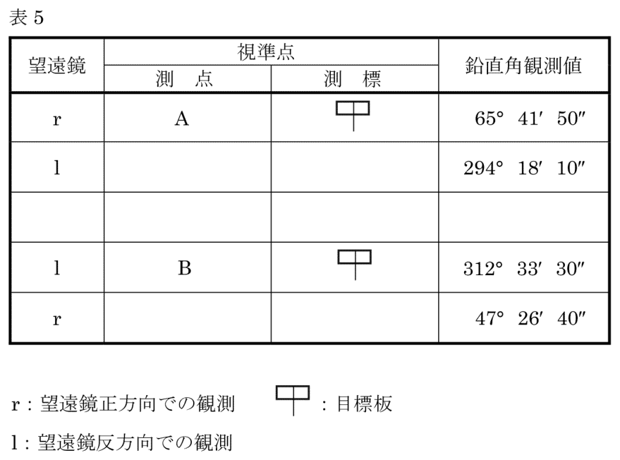
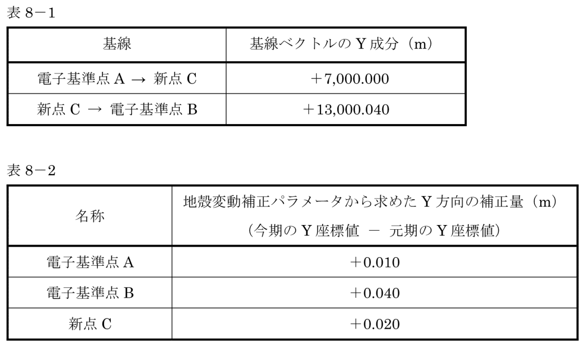
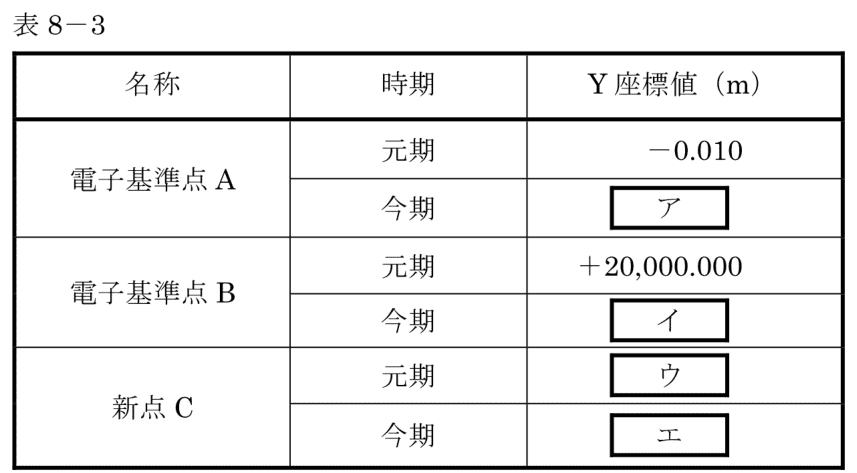
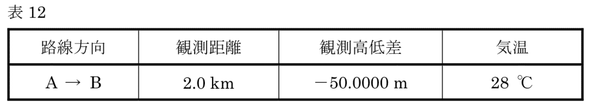
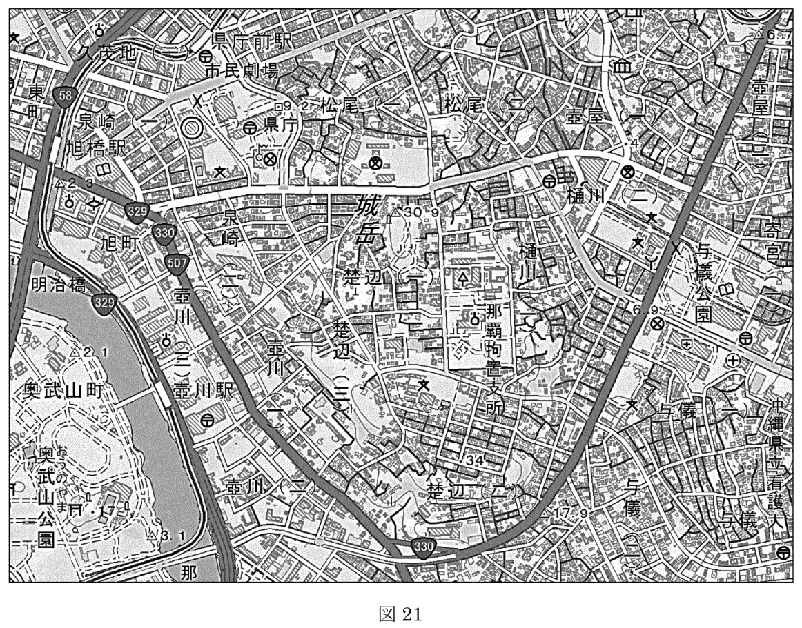
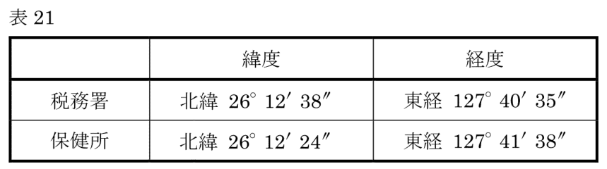
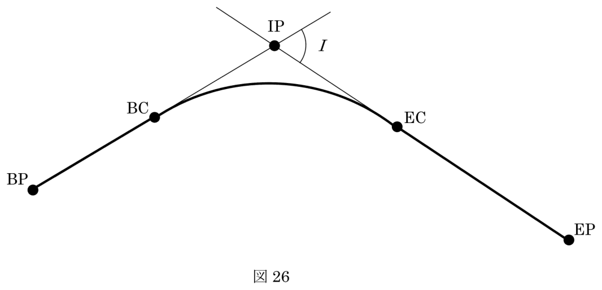
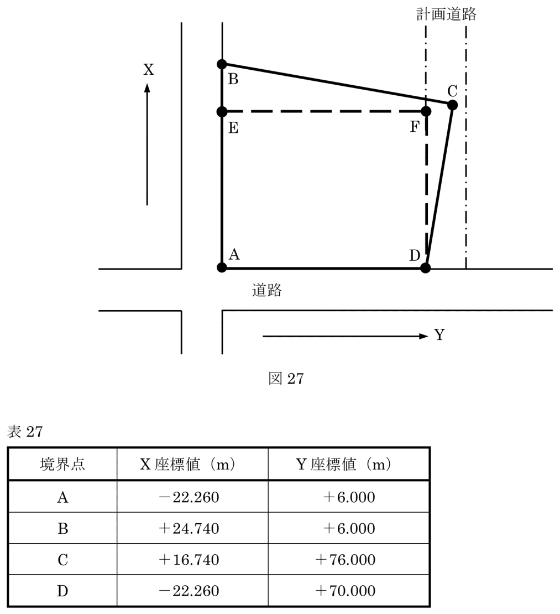

令和6年度（R6）計算問題
測量士補試験の計算問題 12 問。紙と鉛筆で解いてから「答えと解説」を開いてください。関数の値は試験の巻末の関数表を使います。
No.3数学
次のa及びbの各問の答えとして最も近いものの組合せはどれか。次の1～5の中から選べ。
ただし，円周率π＝3.14とする。
なお，関数の値が必要な場合は，巻末の関数表を使用すること。
a．84° 15′ 36″をラジアンに換算すると幾らか。
b．三角形ABCで辺AC＝8.0 m，∠BCA＝70°，∠ABC＝30°としたとき，辺BCの長さは幾らか。
- a=0.73ラジアン／b=4.1 m
- a=0.73ラジアン／b=15.8 m
- a=1.47ラジアン／b=15.0 m
- a=1.47ラジアン／b=15.8 m
- a=4.83ラジアン／b=15.0 m
答えと解説
答え 4
a 84°15′36″ をラジアンに まず分と秒を度に直します（60′ ＝ 1°、3,600″ ＝ 1°）。
84°15′36″ ＝ 84.26°
180° が π ラジアンなので、度に π ÷ 180 を掛けます。
b 三角形の辺 BC 辺 AC ＝ 8.0 m、∠BCA ＝ 70°、∠ABC ＝ 30° です。
正弦定理は「辺 ÷ sin（その辺の向かいの角）」がどの辺でも同じ、という決まりです。求める BC の向かいは角 A なので、先に角 A を出します。
BC ÷ sin 80° ＝ AC ÷ sin 30°
BC ＝ 8.0 × sin 80° ÷ sin 30° ＝ 8.0 × 0.98481 ÷ 0.50000
＝ 16 × 0.98481 ≒ 15.8 m
この問題の違和感を報告
No.5多角
公共測量における3級基準点測量において，トータルステーションを用いて既知点から新点A，新点Bの鉛直角を観測し，表5の結果を得た。新点A，新点Bの高低角及び高度定数の較差の組合せとして最も適当なものはどれか。次の1～5の中から選べ。
なお，関数の値が必要な場合は，巻末の関数表を使用すること。

- 新点Aの高低角=－24° 18′ 10″／新点Bの高低角=－42° 33′ 25″／高度定数の較差=5″
- 新点Aの高低角=＋24° 18′ 10″／新点Bの高低角=＋42° 33′ 25″／高度定数の較差=5″
- 新点Aの高低角=＋24° 18′ 10″／新点Bの高低角=＋42° 33′ 25″／高度定数の較差=10″
- 新点Aの高低角=＋65° 41′ 50″／新点Bの高低角=＋47° 26′ 35″／高度定数の較差=5″
- 新点Aの高低角=＋65° 41′ 50″／新点Bの高低角=＋47° 26′ 35″／高度定数の較差=10″
答えと解説
答え 3
r（望遠鏡が正の向き）の鉛直角は、真上から目標まで測った角です。l（反の向き）は残りの角が読めるので、r ＋ l は 360° になるはず。360° からのずれが高度定数です。
B 47°26′40″ ＋ 312°33′30″ ＝ 360°00′10″ → 高度定数 10″
較差（いちばん大きい値と小さい値の差）＝ 10 − 0 ＝ 10″
真上からの角は、r と「360° − l」の平均で出します。高低角（水平から上向きの角）は 90° からそれを引いたものです。
高低角 ＝ 90° − 65°41′50″ ＝ ＋24°18′10″
47°26′40″ との平均 ＝ 47°26′35″
高低角 ＝ 90° − 47°26′35″ ＝ ＋42°33′25″
この問題の違和感を報告
No.6多角
平面直角座標系（平成14年国土交通省告示第9号）において，点Bは，点Aからの方向角が305° 00′ 00″，平面距離が1,000.00 mの位置にある。点Aの座標値を，XA＝－800.00 m，YA＝＋1,100.00 mとする場合，点Bの座標値（XB，YB）は幾らか。最も近いものを次の1～5の中から選べ。
なお，関数の値が必要な場合は，巻末の関数表を使用すること。
- XB=－1,619.15 m／YB=＋1,673.58 m
- XB=－1,507.11 m／YB=＋1,807.11 m
- XB=－1,373.58 m／YB=＋1,919.15 m
- XB=－226.42 m／YB=＋280.85 m
- XB=＋19.15 m／YB=＋526.42 m
答えと解説
答え 4
方向角は、北（X）から右回りに測った角です。305° は 360° まであと 55° なので、北から左へ 55° 傾いた向き、つまり左上です。だから X は増え（＋）、Y は減ります（−）。
X の変化 ＝ ＋1,000 × cos 55° ＝ 1,000 × 0.57358 ＝ ＋573.58 m
Y の変化 ＝ −1,000 × sin 55° ＝ −1,000 × 0.81915 ＝ −819.15 m
YB ＝ 1,100.00 − 819.15 ＝ ＋280.85 m
この問題の違和感を報告
No.8GNSS
次の文は，公共測量におけるGNSS測量機を用いた基準点測量において，電子基準点A，Bを既知点とした場合のセミ・ダイナミック補正について述べたものである。
表8－1は，観測で得られた電子基準点Aから新点C及び新点Cから電子基準点Bまでの基線ベクトルのY成分を示したものである。表8－2は各点における地殻変動補正パラメータから求めたY方向の補正量を示しており，元期座標値と今期座標値は，「今期座標値＝元期座標値＋地殻変動補正パラメータから求めた補正量」の関係がある。新点Cにおける元期のY座標値を求めるとき，表8－3の［ア］～［エ］に入る数値の組合せとして最も適当なものはどれか。次の1～5の中から選べ。
ただし，基線ベクトルの観測誤差並びにX方向及び楕円体高の補正量は考えないものとする。
なお，関数の値が必要な場合は，巻末の関数表を使用すること。


- ア=－0.020／イ=＋19,999.960／ウ=＋6,999.960／エ=＋6,999.980
- ア=－0.020／イ=＋19,999.960／ウ=＋7,000.000／エ=＋6,999.980
- ア=0.000／イ=＋20,000.020／ウ=＋6,999.960／エ=＋7,000.000
- ア=0.000／イ=＋20,000.040／ウ=＋6,999.980／エ=＋7,000.000
- ア=0.000／イ=＋20,000.040／ウ=＋7,000.020／エ=＋7,000.000
答えと解説
答え 4
元期は座標の基準にしている時点、今期は観測した時点です。その間に地面が動いているので、観測した値は今期どうしでつなぎ、最後に元期へ戻します。問題文の「今期座標値 ＝ 元期座標値 ＋ 補正量」をそのまま使います。
イ B の今期 ＝ 20,000.000 ＋ 0.040 ＝ 20,000.040 m
エ C の今期 ＝ A の今期 ＋ 7,000.000 ＝ 7,000.000 m
ウ C の元期 ＝ 7,000.000 − 0.020 ＝ 6,999.980 m
エは B からも確かめられます。C→B が ＋13,000.040 なので、20,000.040 − 13,000.040 ＝ 7,000.000 m で合います。
この問題の違和感を報告
No.10水準
公共測量における1級水準測量を実施するに当たり，既知点間が1.7 kmの平たんな路線において，最大視準距離を45 mとして観測することとした。往路におけるレベルの設置回数（測点数）は最低何点になるか。次の1～5の中から選べ。
ただし，全測点において視通や観測時の環境条件を考えずにレベルを設置できるものとする。
なお，関数の値が必要な場合は，巻末の関数表を使用すること。
- 18点
- 19点
- 20点
- 38点
- 39点
答えと解説
答え 3
水準測量では、レベル（水平に見る望遠鏡）を 2 本の標尺の真ん中に置き、後ろと前の標尺を読んで進みます。レベルから標尺まで（視準距離）が最大 45 m なので、1 回置くと最大 90 m 進めます。
1,700 ÷ 90 ＝ 18.8… → 足りるには 19 回
ただし、標尺は 2 本 1 組で使い、測点数（レベルを置く回数）は偶数にすると決まっています。19 は奇数なので、次の偶数 20 にします。
この問題の違和感を報告
No.12水準
公共測量により水準点A，B間で1級水準測量を実施し，表12に示す結果を得た。温度変化による標尺の伸縮の影響を考慮し，使用する標尺に対応する標尺補正計算を行った後の水準点A，B間の観測高低差は幾らか。最も近いものを次の1～5の中から選べ。
ただし，観測に使用した標尺の標尺改正数は，20 ℃において＋10 μm/m，膨張係数は＋1.5×10⁻⁶/℃とする。
なお，関数の値が必要な場合は，巻末の関数表を使用すること。

- －50.0046 m
- －50.0011 m
- －50.0005 m
- －49.9999 m
- －49.9989 m
答えと解説
答え 2
標尺（高さを読む物差し）の目盛りには、わずかな狂いがあります。標尺改正数は 1 m あたりの狂いを直す量（20 ℃ のとき）、膨張係数は温度 1 ℃ で 1 m あたりどれだけ伸びるかです。10⁻⁶ は 100 万分の 1 なので、1 m あたりでは 1.5 μm になります（1 μm ＝ 0.000001 m）。
1 m あたりの補正 ＝ 10 ＋ 1.5 × 8 ＝ 10 ＋ 12 ＝ ＋22 μm
高低差 −50 m 分 ＝ 22 × (−50) ＝ −1,100 μm ＝ −0.0011 m
補正後の高低差 ＝ −50.0000 − 0.0011 ＝ −50.0011 m
標尺が伸びていると、実際の高低差は読んだ数字より大きくなります。下がる向き（マイナス）なので、もっと下がる −50.0011 m になります。距離の 2.0 km は使いません。
この問題の違和感を報告
No.15地形
トータルステーションを用いた縮尺1/1,000の地形図作成において，ある道路上に設置された標高40.8 mの基準点Aから，同じ道路上の点Bの観測を行ったところ，高低角6°，斜距離50 mの結果が得られた。
このとき，地形図上において，点A，点B間を結ぶ道路とこれを横断する標高45 mの等高線との交点は，点Aから何cmの地点か。最も近いものを次の1～5の中から選べ。
ただし，点Aと点Bを結ぶ道路は，傾斜が一定でまっすぐな道路であるとする。
なお，関数の値が必要な場合は，巻末の関数表を使用すること。
- 3.0 cm
- 3.5 cm
- 4.0 cm
- 4.5 cm
- 5.0 cm
答えと解説
答え 3
A から標高 45 m の所まで、道路は 45 − 40.8 ＝ 4.2 m 上がります。傾きは 6° で一定なので、A・真下の点・標高 45 m の点で直角三角形ができます。分かっているのは高さ、求めるのは底辺（水平距離）なので、tan を使います。
水平距離 ＝ 4.2 ÷ tan 6° ＝ 4.2 ÷ 0.10510 ≒ 40.0 m
縮尺 1/1,000 では、実際の 1 m が地図上の 1 mm なので、40 m は 40 mm ＝ 4.0 cm。
この問題の違和感を報告
No.18写真
画面距離12 cm，画面の大きさ17,000画素×10,000画素，撮像面での素子寸法5 μmのデジタル航空カメラを用いて鉛直下に向けた空中写真撮影を計画した。
撮影高度を標高3,000 m，撮影基準面における同一撮影コース内の隣接する空中写真との重複度を60%とするとき，撮影基線長は幾らか。最も近いものを次の1～5の中から選べ。
ただし，撮影基準面の標高は600 mとし，画面の短辺が撮影基線と平行であるとする。
なお，関数の値が必要な場合は，巻末の関数表を使用すること。
- 400 m
- 500 m
- 600 m
- 680 m
- 750 m
答えと解説
答え 1
撮影基線長は、1 枚目を撮ってから 2 枚目を撮るまでに飛行機が進む距離です。まず、写真 1 枚が進む向きに写す地面の幅を出します。
縮尺 「画面距離 ÷ 基準面からカメラまでの高さ」です。撮影高度は標高 3,000 m、基準面は標高 600 m なので、高さは 2,400 m。
1 枚の幅 進む向きは画面の短辺（10,000 画素）です。
地面の幅 ＝ 0.05 × 20,000 ＝ 1,000 m
撮影基線長 となりの写真と 60% 重なるので、ずれるのは残りの 40% です。
この問題の違和感を報告
No.19点群
次のa～cの文は，公共測量における航空レーザ測量の欠測率について述べたものである。［ア］及び［イ］に入る語句又は数値の組合せとして最も適当なものはどれか。次の1～5の中から選べ。
なお，関数の値が必要な場合は，巻末の関数表を使用すること。
a．「欠測」とは，点群データを格子間隔で区切り，一つの格子内に点群データがない場合をいう。
b．欠測率は，対象面積に対する欠測の割合を示すものであり，欠測率＝（欠測格子数/格子数）×100で求めるものとする。なお，欠測率の計算対象に，水部［ア］ものとする。
c．800 m×600 mの範囲において，計画する格子間隔が1 mになるように計測した点群データがある。この範囲内に水部はなく，点群データがない格子の個数を数えたところ，36,000であった。この範囲における欠測率として最も近い値は［イ］%である。
- ア=は含まない／イ=7.0
- ア=は含まない／イ=7.5
- ア=は含まない／イ=8.1
- ア=も含む／イ=7.0
- ア=も含む／イ=7.5
答えと解説
答え 2
ア 欠測は、点群データを格子で区切ったとき、1 つの格子の中に点が 1 つも無いことです。川や池などの水部は、欠測率の計算の対象に「含まない」と決まっています。
イ 800 m × 600 m を 1 m の格子で区切ると、格子の数は
点の無い格子は 36,000 個で、水部は無いので、そのまま割り算します。
＝ 36 ÷ 480 × 100 ＝ 3,600 ÷ 480 ＝ 7.5%
この問題の違和感を報告
No.21地図
図21は，国土地理院がインターネットで提供している二次元の地図「地理院地図」の一部（縮尺を変更，一部を改変）である。この図にある裁判所の経緯度で最も近いものを次の1～5の中から選べ。
ただし，表21に示す数値は，図の中にある税務署及び保健所の経緯度を地理院地図で読み取った値である。
なお，関数の値が必要な場合は，巻末の関数表を使用すること。


図の出典：国土地理院「地理院地図」（測量士補試験の問題に掲載されたもの）
- 北緯26° 12′ 17″ 東経127° 42′ 05″
- 北緯26° 12′ 29″ 東経127° 41′ 02″
- 北緯26° 12′ 30″ 東経127° 41′ 14″
- 北緯26° 12′ 31″ 東経127° 41′ 11″
- 北緯26° 12′ 51″ 東経127° 41′ 31″
答えと解説
答え 4
まず 3 つの地図記号を探します。税務署はそろばんの玉の形、保健所は丸に十字、裁判所は立て札の形です。税務署（左上）と保健所（右下）の経緯度が分かっているので、裁判所がその間のどこにあるかを、図の長さの比で割り出します。右へ行くほど経度が大きく、下へ行くほど緯度が小さくなります。
経度（横）
税務署から裁判所まで ＝ 63 × 68 ÷ 117.5 ≒ 36″
裁判所 ＝ 127°40′35″ ＋ 36″ ＝ 127°41′11″ くらい
緯度（縦）
税務署から裁判所まで ＝ 14 × 14 ÷ 29 ≒ 7″
裁判所 ＝ 26°12′38″ − 7″ ＝ 26°12′31″ くらい
いちばん近いのは、北緯 26°12′31″・東経 127°41′11″ の選択肢 4 です。
図の出典：国土地理院「地理院地図」（測量士補試験の問題に掲載されたもの）。赤・青の線と文字は当サイトが書き足しました
この問題の違和感を報告
No.26応用
図26に示すように，起点BP，円曲線始点BC，円曲線終点EC及び終点EPからなる直線と円曲線の道路を組み合わせた新しい道路を建設することとなった。BPと交点IPとの距離が280 m，EC～EPの距離が206 m，円曲線の曲線半径R＝200 m，交角I＝60°としたとき，建設する道路の路線長BP～EPは幾らか。最も近いものを次の1～5の中から選べ。
ただし，円周率π＝3.14とする。
なお，関数の値が必要な場合は，巻末の関数表を使用すること。

- 476 m
- 481 m
- 580 m
- 595 m
- 606 m
答えと解説
答え 3
路線長は、BP～BC の直線、BC～EC の円の弧、EC～EP の直線の 3 つを足した長さです。BP～BC が分かっていないので、BP～IP の 280 m から、BC～IP の長さ（接線の長さ）を引いて出します。
接線は半径と直角に交わるので、O・BC・IP は直角三角形。O の角は 60° の半分の 30° です。
BP～BC ＝ 280 − 115.47 ＝ 164.53 m
弧の長さは、半径 200 m・中心角 60° です。
この問題の違和感を報告
No.27応用
図27は，境界点A，B，C，Dの4点で囲まれた四角形の土地を表したもので，各境界点の平面直角座標系（平成14年国土交通省告示第9号）における座標値は表27に示すとおりである。
この度，計画道路の建設に伴い四角形の土地ABCDを長方形の土地AEFDに整えることとなった。長方形AEFDの面積を四角形ABCDの面積の70%とするとき，点FのX座標値は幾らか。最も近いものを次の1～5の中から選べ。
なお，関数の値が必要な場合は，巻末の関数表を使用すること。

- ＋7.840 m
- ＋9.382 m
- ＋10.640 m
- ＋13.740 m
- ＋22.943 m
答えと解説
答え 2
X は北（上）、Y は東（右）です。A と B は Y が同じなので AB は南北の線、A と D は X が同じなので AD は東西の線です。四角形 ABCD を A と C を結ぶ線で 2 つの三角形に分けて面積を出します。
AD ＝ 70 − 6 ＝ 64 m AD から C まで ＝ 16.740 − (−22.260) ＝ 39 m
② ＝ 64 × 39 ÷ 2 ＝ 1,248 m²
四角形 ABCD ＝ 1,645 ＋ 1,248 ＝ 2,893 m²
長方形 AEFD はその 70% で、横が AD の 64 m です。縦 AE を出せば、F の X 座標は A の X 座標に AE を足した値です。
AE ＝ 2,025.1 ÷ 64 ≒ 31.642 m
F の X 座標 ＝ −22.260 ＋ 31.642 ＝ ＋9.382 m